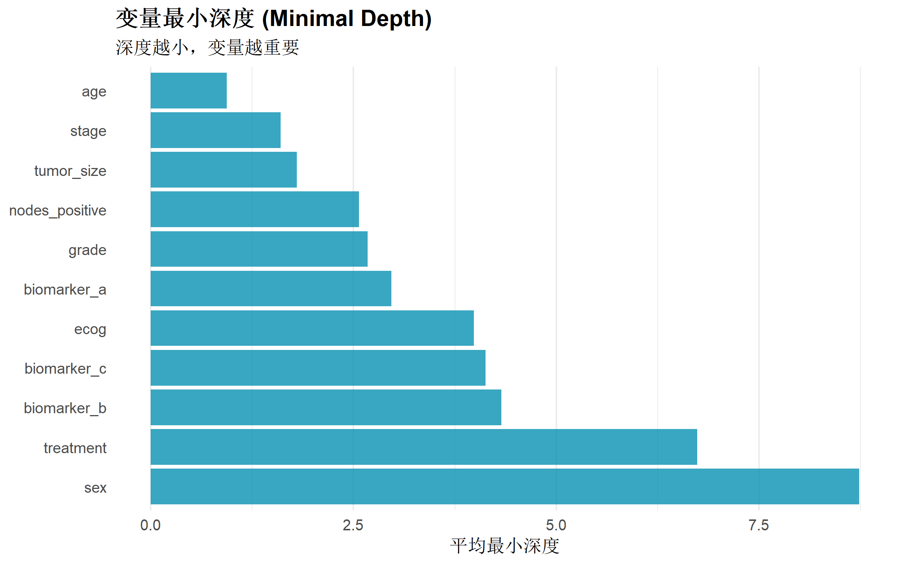
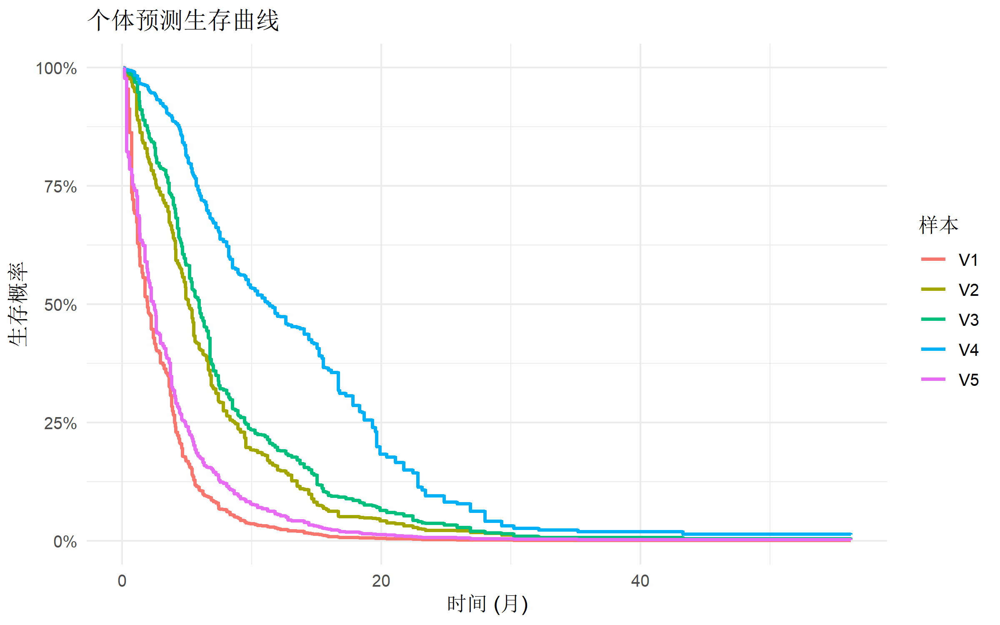
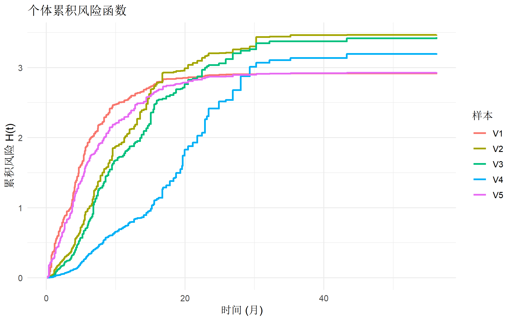
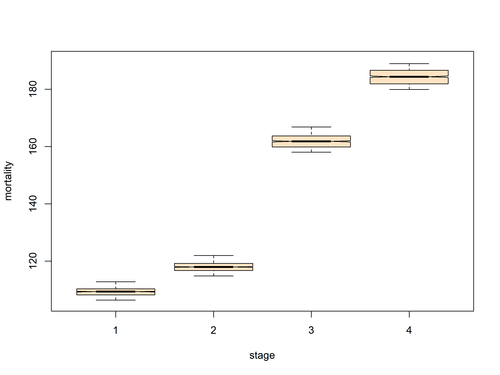
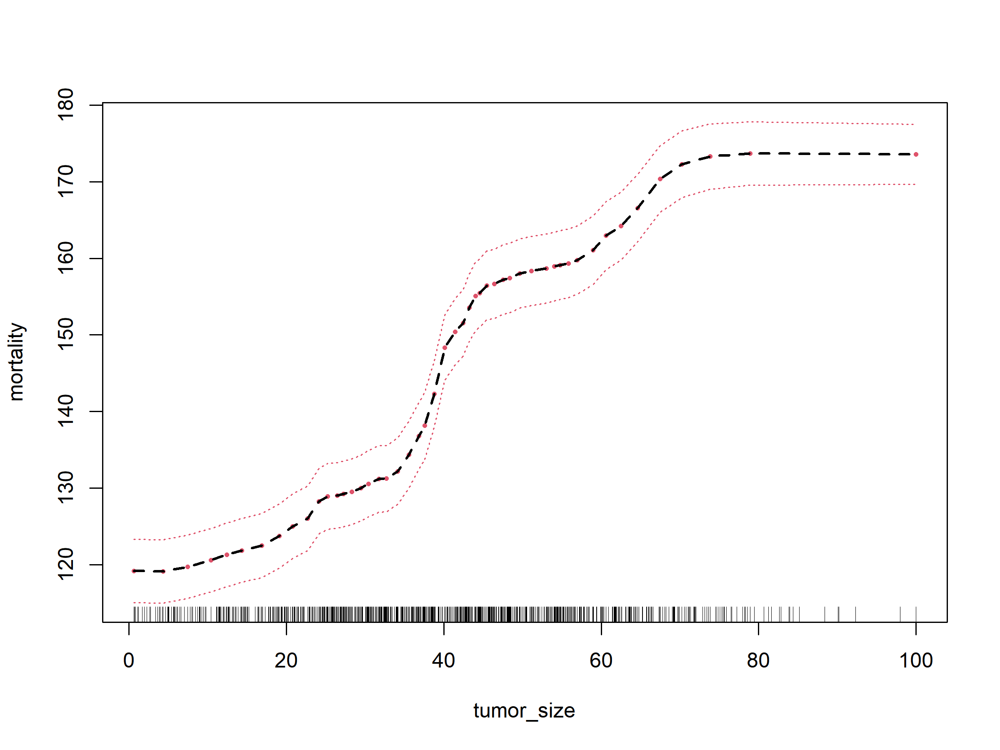
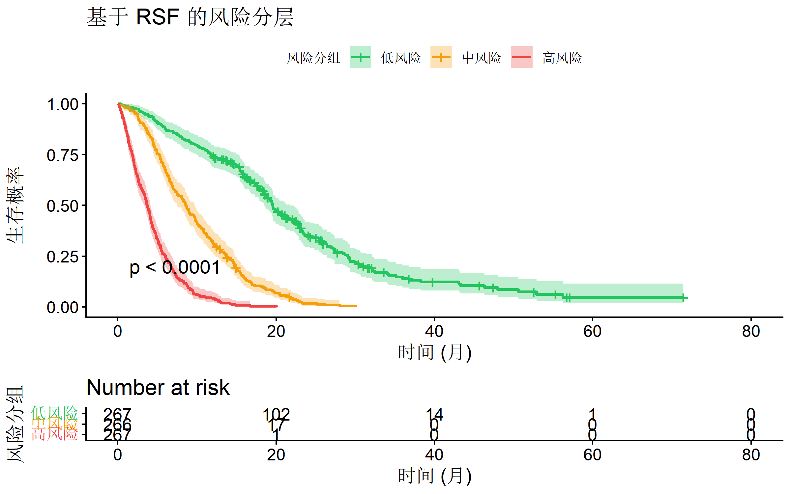

# 核心包
library(randomForestSRC) # RSF 主力包
library(ranger) # 更快的实现
library(survival) # 生存分析基础
library(pec) # 预测误差曲线
# 可视化
library(ggplot2)
library(tidyverse)
theme_set(theme_minimal(base_size = 12))随机生存森林完全指南
统计分析方法
生存分析
机器学习
什么是随机生存森林
随机生存森林（Random Survival Forest, RSF） 是将随机森林算法扩展到生存分析领域的机器学习方法。它结合了随机森林的优势与生存分析处理删失数据的能力。
适用场景
| 场景 | 说明 |
|---|---|
| 高维数据 | 变量数量远多于样本量 |
| 非线性关系 | 协变量与风险之间存在复杂非线性关系 |
| 变量交互 | 存在高阶交互作用 |
| 变量选择 | 自动筛选重要变量 |
| 预测建模 | 关注预测精度而非推断 |
RSF vs Cox 模型
| 特性 | Cox 比例风险模型 | 随机生存森林 |
|---|---|---|
| 线性假设 | 需要（log-线性） | 不需要 |
| 比例风险假设 | 需要 | 不需要 |
| 变量数量 | 受限于样本量 | 可处理高维 |
| 交互作用 | 需手动指定 | 自动捕获 |
| 可解释性 | 高（HR 解释） | 中等（需要可视化） |
| 推断 | 可做假设检验 | 主要用于预测 |
| 过拟合风险 | 低 | 中等（需调参） |
R 包安装与加载
理论基础
生存树的构建
RSF 中每棵生存树的构建遵循以下原则：
- 节点分裂准则：使用 log-rank 统计量或对数秩分裂规则
- 终止条件：达到最小节点大小或最大深度
- 终端节点：估计该节点样本的累积风险函数
分裂规则
最常用的分裂规则是 log-rank splitting：
\[\text{Log-rank statistic} = \frac{(O_1 - E_1)^2}{\text{Var}(O_1 - E_1)}\]
其中 \(O_1\) 是子节点1中的观察事件数，\(E_1\) 是期望事件数。
集成预测
对于新样本，RSF 的预测是所有树预测的平均累积风险函数：
\[\hat{H}(t|x) = \frac{1}{B}\sum_{b=1}^{B} \hat{H}_b(t|x)\]
实战案例：肿瘤患者预后预测
模拟数据
# 模拟肿瘤患者生存数据
set.seed(2024)
n <- 800
# 生成协变量
cancer_rsf <- tibble(
id = 1:n,
age = round(rnorm(n, 60, 12)),
sex = factor(sample(c("男", "女"), n, replace = TRUE)),
stage = factor(sample(1:4, n, replace = TRUE, prob = c(0.15, 0.30, 0.35, 0.20))),
grade = factor(sample(1:3, n, replace = TRUE)),
tumor_size = abs(rnorm(n, 40, 20)),
nodes_positive = rpois(n, 2),
biomarker_a = rnorm(n, 100, 30),
biomarker_b = rnorm(n, 50, 15),
biomarker_c = rnorm(n, 200, 50),
treatment = factor(sample(c("标准", "新方案"), n, replace = TRUE)),
ecog = sample(0:3, n, replace = TRUE, prob = c(0.3, 0.4, 0.2, 0.1))
)
# 生成生存时间（包含非线性效应和交互作用）
cancer_rsf <- cancer_rsf %>%
mutate(
# 复杂的风险函数（包含非线性和交互）
log_hr = 0.03 * (age - 60) +
0.5 * (as.numeric(stage) - 1) +
0.3 * (as.numeric(grade) - 1) +
0.02 * tumor_size +
0.15 * nodes_positive +
0.005 * (biomarker_a - 100) +
0.01 * (biomarker_b - 50)^2 / 100 + # 非线性效应
-0.3 * (treatment == "新方案") +
0.2 * ecog +
0.02 * (age - 60) * (as.numeric(stage) - 1), # 交互作用
# 生存时间（Weibull）
survival_time = rweibull(n, shape = 1.5, scale = 48 * exp(-log_hr / 1.5)),
censor_time = runif(n, 12, 72),
time = pmin(survival_time, censor_time),
status = as.integer(survival_time <= censor_time)
) %>%
select(-log_hr, -survival_time, -censor_time)
# 查看数据
glimpse(cancer_rsf)Rows: 800
Columns: 14
$ id <int> 1, 2, 3, 4, 5, 6, 7, 8, 9, 10, 11, 12, 13, 14, 15, 16, …
$ age <dbl> 72, 66, 59, 57, 74, 76, 66, 58, 45, 47, 40, 66, 70, 64,…
$ sex <fct> 男, 男, 女, 女, 男, 女, 女, 女, 男, 男, 女, 女, 女, 女, 女, 男, 男, 女, 男…
$ stage <fct> 3, 3, 4, 3, 3, 2, 1, 3, 3, 2, 3, 4, 3, 1, 2, 4, 4, 4, 4…
$ grade <fct> 3, 3, 3, 1, 1, 1, 1, 2, 1, 1, 3, 3, 1, 1, 1, 3, 2, 2, 1…
$ tumor_size <dbl> 66.2282330, 36.9110376, 44.4105912, 37.0697422, 92.3079…
$ nodes_positive <int> 5, 3, 2, 1, 2, 1, 2, 2, 4, 1, 0, 1, 1, 1, 2, 3, 2, 4, 0…
$ biomarker_a <dbl> 94.07990, 83.73132, 61.33038, 110.21122, 135.22067, 82.…
$ biomarker_b <dbl> 65.53666, 41.21167, 45.87980, 61.85733, 68.81587, 34.00…
$ biomarker_c <dbl> 290.0940, 162.1802, 191.3112, 149.5812, 260.1559, 189.7…
$ treatment <fct> 标准, 标准, 新方案, 标准, 标准, 标准, 新方案, 标准, 新方案, 标准, 标准, 新方案, 标准,…
$ ecog <int> 3, 2, 1, 1, 3, 3, 2, 3, 3, 1, 1, 2, 2, 2, 2, 1, 2, 1, 3…
$ time <dbl> 0.7356448, 0.9830922, 6.7372882, 16.2752356, 0.2784047,…
$ status <int> 1, 1, 1, 1, 1, 1, 1, 1, 1, 1, 1, 1, 1, 1, 0, 1, 0, 1, 1…cat("\n事件率:", mean(cancer_rsf$status), "\n")
事件率: 0.9075 使用 randomForestSRC 构建 RSF
# 准备数据
rsf_data <- cancer_rsf %>%
select(-id) %>%
mutate(across(where(is.character), as.factor))
# 构建 RSF 模型
rsf_model <- rfsrc(
Surv(time, status) ~ .,
data = rsf_data,
ntree = 500, # 树的数量
nodesize = 15, # 终端节点最小样本数
nsplit = 10, # 每次分裂考虑的候选点数
importance = TRUE, # 计算变量重要性
seed = 42
)
print(rsf_model) Sample size: 800
Number of deaths: 726
Number of trees: 500
Forest terminal node size: 15
Average no. of terminal nodes: 37.764
No. of variables tried at each split: 4
Total no. of variables: 11
Resampling used to grow trees: swor
Resample size used to grow trees: 506
Analysis: RSF
Family: surv
Splitting rule: logrank *random*
Number of random split points: 10
(OOB) CRPS: 4.59504653
(OOB) standardized CRPS: 0.08172861
(OOB) Requested performance error: 0.28127997使用 ranger 构建 RSF（更快）
# ranger 实现（速度更快，适合大数据）
rsf_ranger <- ranger(
Surv(time, status) ~ .,
data = rsf_data,
num.trees = 500,
min.node.size = 15,
importance = "permutation",
seed = 42
)
print(rsf_ranger)Ranger result
Call:
ranger(Surv(time, status) ~ ., data = rsf_data, num.trees = 500, min.node.size = 15, importance = "permutation", seed = 42)
Type: Survival
Number of trees: 500
Sample size: 800
Number of independent variables: 11
Mtry: 4
Target node size: 15
Variable importance mode: permutation
Splitrule: logrank
Number of unique death times: 726
OOB prediction error (1-C): 0.2882467 变量重要性分析
VIMP (Variable Importance)
VIMP 通过置换变量值并观察预测误差变化来衡量变量重要性。
# 提取变量重要性
vimp <- rsf_model$importance
# 创建可视化数据
vimp_df <- tibble(
variable = names(vimp),
importance = vimp
) %>%
arrange(desc(importance)) %>%
mutate(variable = fct_reorder(variable, importance))
# 可视化
ggplot(vimp_df, aes(x = importance, y = variable)) +
geom_col(fill = "#059669", alpha = 0.8) +
geom_vline(xintercept = 0, linetype = "dashed", color = "gray50") +
labs(
title = "随机生存森林变量重要性 (VIMP)",
subtitle = "正值表示该变量对预测有贡献",
x = "变量重要性",
y = NULL
) +
theme(
plot.title = element_text(face = "bold"),
panel.grid.major.y = element_blank()
)
Minimal Depth
Minimal Depth 衡量变量首次用于分裂的深度，深度越小越重要。
# 计算 minimal depth
md <- max.subtree(rsf_model)
# 提取平均 minimal depth
md_df <- tibble(
variable = names(md$order[, 1]),
min_depth = md$order[, 1]
) %>%
arrange(min_depth)
# 可视化
ggplot(md_df, aes(x = min_depth, y = fct_reorder(variable, -min_depth))) +
geom_col(fill = "#0891b2", alpha = 0.8) +
labs(
title = "变量最小深度 (Minimal Depth)",
subtitle = "深度越小，变量越重要",
x = "平均最小深度",
y = NULL
) +
theme(
plot.title = element_text(face = "bold"),
panel.grid.major.y = element_blank()
)
预测与评估
预测生存概率
# 预测
pred <- predict(rsf_model)
# 查看预测结构
names(pred) [1] "call" "family" "n" "ntree"
[5] "yvar" "yvar.names" "xvar" "xvar.names"
[9] "leaf.count" "proximity" "forest" "forest.wt"
[13] "case.depth" "distance" "ptn.membership" "membership"
[17] "splitrule" "inbag" "var.used" "uno.weights"
[21] "imputed.indv" "imputed.data" "split.depth" "block.size"
[25] "perf.type" "ctime.internal" "ctime.external" "chf"
[29] "chf.oob" "predicted" "predicted.oob" "survival"
[33] "survival.oob" "cif" "cif.oob" "err.rate"
[37] "time.interest" "ndead" # 预测的生存曲线（前5个样本）
surv_curves <- pred$survival[1:5, ]
time_points <- pred$time.interest
# 转换为长格式绑图
surv_long <- as_tibble(t(surv_curves)) %>%
mutate(time = time_points) %>%
pivot_longer(-time, names_to = "sample", values_to = "survival")
ggplot(surv_long, aes(x = time, y = survival, color = sample)) +
geom_step(linewidth = 1) +
scale_y_continuous(limits = c(0, 1), labels = scales::percent) +
labs(
title = "个体预测生存曲线",
x = "时间 (月)",
y = "生存概率",
color = "样本"
) +
theme(legend.position = "right")
累积风险函数
# 预测累积风险
chf_curves <- pred$chf[1:5, ]
chf_long <- as_tibble(t(chf_curves)) %>%
mutate(time = time_points) %>%
pivot_longer(-time, names_to = "sample", values_to = "chf")
ggplot(chf_long, aes(x = time, y = chf, color = sample)) +
geom_step(linewidth = 1) +
labs(
title = "个体累积风险函数",
x = "时间 (月)",
y = "累积风险 H(t)",
color = "样本"
) +
theme(legend.position = "right")
模型评估：C-index
# OOB C-index（袋外样本）
cat("OOB C-index:", 1 - rsf_model$err.rate[rsf_model$ntree], "\n")OOB C-index: 0.71872 # 与 Cox 模型比较
cox_model <- coxph(Surv(time, status) ~ ., data = rsf_data)
# Cox 模型 C-index
cox_cindex <- summary(cox_model)$concordance[1]
cat("Cox C-index:", cox_cindex, "\n")Cox C-index: 0.7360626 Brier Score 和 IBS
# Brier Score 计算说明
# pec 包可用于更详细的预测误差曲线分析
# 这里展示基本的 C-index 比较
# 模型性能比较表
performance_table <- tibble(
模型 = c("Cox 比例风险模型", "随机生存森林 (RSF)"),
`C-index` = c(
round(summary(cox_model)$concordance[1], 4),
round(1 - rsf_model$err.rate[rsf_model$ntree], 4)
),
说明 = c("基于训练数据", "基于 OOB 样本")
)
performance_table %>% knitr::kable(caption = "模型预测性能比较")| 模型 | C-index | 说明 |
|---|---|---|
| Cox 比例风险模型 | 0.7361 | 基于训练数据 |
| 随机生存森林 (RSF) | 0.7187 | 基于 OOB 样本 |
部分依赖图
部分依赖图（Partial Dependence Plot）展示单个变量对预测的边际效应。
# 对重要变量绑制部分依赖图
# 年龄
plot.variable(rsf_model,
xvar.names = "age",
partial = TRUE,
surv.type = "mort", # 死亡率
time = 36, # 36个月时的预测
npts = 50
)
# 分期
plot.variable(rsf_model,
xvar.names = "stage",
partial = TRUE,
surv.type = "mort",
time = 36
)
# 肿瘤大小（连续变量）
plot.variable(rsf_model,
xvar.names = "tumor_size",
partial = TRUE,
surv.type = "mort",
time = 36,
npts = 50
)
风险分层
使用 RSF 预测进行患者风险分层。
# 获取预测的死亡率
rsf_data$predicted_mortality <- pred$predicted
# 按预测风险分组
rsf_data <- rsf_data %>%
mutate(
risk_group = cut(
predicted_mortality,
breaks = quantile(predicted_mortality, c(0, 1 / 3, 2 / 3, 1)),
labels = c("低风险", "中风险", "高风险"),
include.lowest = TRUE
)
)
# 绑制分层生存曲线
library(survminer)
km_risk <- survfit(Surv(time, status) ~ risk_group, data = rsf_data)
ggsurvplot(
km_risk,
data = rsf_data,
pval = TRUE,
conf.int = TRUE,
risk.table = TRUE,
palette = c("#22c55e", "#f59e0b", "#ef4444"),
legend.title = "风险分组",
legend.labs = c("低风险", "中风险", "高风险"),
xlab = "时间 (月)",
ylab = "生存概率",
title = "基于 RSF 的风险分层"
)
模型调参
关键超参数
| 参数 | 说明 | 默认值 | 建议范围 |
|---|---|---|---|
ntree |
树的数量 | 500 | 500-2000 |
nodesize |
终端节点最小样本 | 15 | 5-50 |
mtry |
每次分裂考虑的变量数 | sqrt(p) | 1-p |
nsplit |
候选分裂点数 | 10 | 5-20 |
交叉验证调参
# 使用 OOB 误差进行调参
tune_results <- tune(
Surv(time, status) ~ .,
data = rsf_data %>% select(-risk_group, -predicted_mortality),
mtryStart = 3,
nodesizeTry = c(5, 10, 15, 20, 30),
ntreeTry = 100, # 为节省时间使用较少的树
trace = FALSE
)
print(tune_results)$results
nodesize mtry err
1 1 1 0.2827721
2 1 2 0.2642194
3 1 3 0.2360929
4 1 4 0.2354971
5 1 5 0.2336204
6 1 6 0.2406122
7 1 7 0.2333812
8 1 8 0.2324165
9 1 10 0.2353296
10 1 11 0.2375617
11 2 1 0.2656922
12 2 2 0.2365745
13 2 3 0.2396229
14 2 4 0.2351591
15 2 5 0.2272608
16 2 6 0.2385539
17 2 7 0.2349682
18 2 8 0.2374023
19 2 10 0.2396155
20 2 11 0.2311715
21 3 5 0.2412911
22 3 6 0.2413938
23 3 7 0.2392190
24 3 8 0.2376283
25 3 10 0.2341939
26 3 11 0.2360355
27 4 1 0.2582293
28 4 2 0.2527714
29 4 3 0.2431804
30 4 4 0.2434538
31 4 5 0.2407928
32 4 6 0.2480829
33 4 7 0.2432127
34 4 8 0.2399116
35 4 10 0.2411783
36 4 11 0.2518509
37 5 2 0.2447931
38 5 3 0.2491638
39 5 4 0.2490778
40 5 5 0.2460059
41 5 6 0.2439531
42 5 7 0.2493372
43 5 8 0.2481403
44 5 10 0.2416365
45 5 11 0.2464937
46 6 2 0.2473914
47 6 3 0.2483640
48 6 4 0.2436139
49 6 5 0.2464310
50 6 6 0.2415390
51 6 7 0.2454932
52 6 8 0.2398432
53 6 10 0.2400792
54 6 11 0.2473279
55 7 1 0.2580068
56 7 2 0.2594381
57 7 3 0.2447986
58 7 4 0.2389293
59 7 5 0.2539654
60 7 6 0.2494183
61 7 7 0.2523568
62 7 8 0.2450465
63 7 10 0.2448832
64 7 11 0.2521946
65 8 1 0.2588282
66 8 2 0.2421868
67 8 3 0.2509016
68 8 4 0.2494548
69 8 5 0.2520794
70 8 6 0.2597458
71 8 7 0.2495366
72 8 8 0.2526777
73 8 10 0.2476163
74 8 11 0.2436289
75 9 1 0.2628113
76 9 2 0.2423123
77 9 3 0.2427209
78 9 4 0.2457105
79 9 5 0.2509298
80 9 6 0.2556831
81 9 7 0.2598417
82 9 8 0.2556358
83 9 10 0.2504823
84 9 11 0.2600252
85 10 1 0.2500646
86 10 2 0.2561012
87 10 3 0.2454078
88 10 4 0.2597989
89 10 5 0.2523327
90 10 6 0.2476344
91 10 7 0.2508244
92 10 8 0.2519883
93 10 10 0.2561152
94 10 11 0.2617980
95 15 1 0.2572460
96 15 2 0.2486126
97 15 3 0.2547127
98 15 4 0.2502420
99 15 5 0.2556851
100 15 6 0.2603723
101 15 7 0.2649463
102 15 8 0.2566118
103 15 10 0.2651051
104 15 11 0.2604026
105 20 1 0.2692092
106 20 2 0.2532727
107 20 3 0.2471912
108 20 4 0.2571599
109 20 5 0.2554456
110 20 6 0.2530569
111 20 7 0.2566748
112 20 8 0.2717421
113 20 10 0.2652263
114 20 11 0.2600085
115 25 1 0.2556569
116 25 2 0.2484263
117 25 3 0.2409270
118 25 4 0.2546554
119 25 5 0.2533387
120 25 6 0.2619256
121 25 7 0.2621066
122 25 8 0.2634231
123 25 10 0.2692344
124 25 11 0.2658276
125 30 2 0.2501348
126 30 3 0.2504704
127 30 4 0.2661120
128 30 5 0.2634777
129 30 6 0.2502773
130 30 7 0.2655621
131 30 8 0.2678063
132 30 10 0.2715209
133 30 11 0.2661183
134 35 1 0.2716262
135 35 2 0.2619691
136 35 3 0.2540763
137 35 4 0.2655195
138 35 5 0.2711938
139 35 6 0.2569606
140 35 7 0.2519792
141 35 8 0.2603400
142 35 10 0.2713566
143 35 11 0.2722150
144 40 1 0.2580888
145 40 2 0.2400857
146 40 3 0.2545749
147 40 4 0.2449717
148 40 5 0.2629255
149 40 6 0.2650811
150 40 7 0.2691369
151 40 8 0.2707893
152 40 10 0.2794769
153 40 11 0.2684459
154 45 1 0.2665541
155 45 2 0.2480705
156 45 3 0.2592148
157 45 4 0.2669770
158 45 5 0.2615534
159 45 6 0.2641801
160 45 7 0.2619618
161 45 8 0.2722804
162 45 10 0.2806446
163 45 11 0.2785385
164 50 1 0.2893573
165 50 2 0.2712932
166 50 3 0.2540870
167 50 4 0.2486869
168 50 5 0.2575259
169 50 6 0.2634572
170 50 7 0.2609249
171 50 8 0.2723958
172 50 10 0.2758422
173 50 11 0.2857538
174 55 1 0.2818712
175 55 2 0.2666999
176 55 3 0.2620450
177 55 4 0.2661726
178 55 5 0.2675285
179 55 6 0.2734376
180 55 7 0.2636916
181 55 8 0.2730504
182 55 10 0.2836532
183 55 11 0.2814793
184 60 1 0.2649418
185 60 2 0.2718601
186 60 3 0.2654658
187 60 4 0.2468010
188 60 5 0.2611066
189 60 6 0.2549070
190 60 7 0.2724218
191 60 8 0.2689993
192 60 10 0.2757928
193 60 11 0.2884324
194 65 1 0.2703898
195 65 2 0.2635150
196 65 3 0.2577917
197 65 4 0.2558241
198 65 5 0.2614264
199 65 6 0.2745757
200 65 7 0.2738662
201 65 8 0.2806727
202 65 10 0.2790477
203 65 11 0.2804652
204 70 1 0.2619584
205 70 2 0.2885051
206 70 3 0.2549460
207 70 4 0.2644772
208 70 5 0.2562147
209 70 6 0.2672690
210 70 7 0.2694930
211 70 8 0.2747997
212 70 10 0.2778553
213 70 11 0.2870730
$optimal
nodesize mtry
2 5
$rf
Sample size: 800
Number of deaths: 726
Number of trees: 500
Forest terminal node size: 2
Average no. of terminal nodes: 74.664
No. of variables tried at each split: 5
Total no. of variables: 11
Resampling used to grow trees: swor
Resample size used to grow trees: 150
Analysis: RSF
Family: surv
Splitting rule: logrank *random*
Number of random split points: 1
(OOB) CRPS: 4.75535628
(OOB) standardized CRPS: 0.08457992
(OOB) Requested performance error: 0.27186845# 使用最优参数重新训练
optimal_nodesize <- tune_results$optimal[1]
rsf_tuned <- rfsrc(
Surv(time, status) ~ .,
data = rsf_data %>% select(-risk_group, -predicted_mortality),
ntree = 500,
nodesize = optimal_nodesize,
importance = TRUE,
seed = 42
)
cat("优化后 OOB C-index:", 1 - rsf_tuned$err.rate[rsf_tuned$ntree], "\n")优化后 OOB C-index: 0.7209579 RSF vs Cox：完整对比
# 准备干净数据
model_data <- rsf_data %>%
select(-risk_group, -predicted_mortality)
# Cox 模型
cox_full <- coxph(Surv(time, status) ~ ., data = model_data)
# RSF 模型
rsf_full <- rfsrc(Surv(time, status) ~ .,
data = model_data,
ntree = 500, importance = TRUE, seed = 42
)
# 比较 C-index
tibble(
模型 = c("Cox 比例风险模型", "随机生存森林"),
`C-index` = c(
summary(cox_full)$concordance[1],
1 - rsf_full$err.rate[rsf_full$ntree]
)
) %>%
mutate(`C-index` = round(`C-index`, 4)) %>%
knitr::kable()| 模型 | C-index |
|---|---|
| Cox 比例风险模型 | 0.7361 |
| 随机生存森林 | 0.7187 |
实用技巧
处理缺失值
RSF 可以自动处理缺失值，使用最优分裂方向进行插补。
# RSF 自动处理缺失值
model_data_missing <- model_data
model_data_missing$biomarker_a[sample(1:nrow(model_data), 50)] <- NA
rsf_missing <- rfsrc(
Surv(time, status) ~ .,
data = model_data_missing,
ntree = 500,
na.action = "na.impute", # 缺失值插补
seed = 42
)
cat("含缺失值的 OOB C-index:", 1 - rsf_missing$err.rate[rsf_missing$ntree], "\n")含缺失值的 OOB C-index: 0.7203593 变量选择
使用 VIMP 进行变量选择：
# 基于 VIMP 的变量选择
vimp_values <- rsf_model$importance
# 选择重要性 > 0 的变量
selected_vars <- names(vimp_values[vimp_values > 0])
cat("选择的变量:", paste(selected_vars, collapse = ", "), "\n")选择的变量: age, stage, grade, tumor_size, nodes_positive, biomarker_a, biomarker_b, biomarker_c, treatment, ecog # 使用选择的变量重新训练
formula_selected <- as.formula(
paste("Surv(time, status) ~", paste(selected_vars, collapse = " + "))
)
rsf_selected <- rfsrc(
formula_selected,
data = model_data,
ntree = 500,
importance = TRUE,
seed = 42
)
cat("变量选择后 OOB C-index:", 1 - rsf_selected$err.rate[rsf_selected$ntree], "\n")变量选择后 OOB C-index: 0.718447 代码速查表
# ========== RSF 分析模板 ==========
library(randomForestSRC)
library(ranger)
# 1. 构建模型
rsf <- rfsrc(
Surv(time, status) ~ .,
data = data,
ntree = 500,
nodesize = 15,
importance = TRUE
)
# 2. 变量重要性
vimp <- rsf$importance
plot.variable(rsf, xvar.names = "var_name", partial = TRUE)
# 3. 预测
pred <- predict(rsf, newdata = test_data)
survival_probs <- pred$survival # 生存概率矩阵
# 4. 评估
c_index <- 1 - rsf$err.rate[rsf$ntree]
# 5. 调参
tune_result <- tune(Surv(time, status) ~ ., data = data)
# 6. 风险分层
risk_score <- predict(rsf)$predicted
risk_group <- cut(risk_score, breaks = quantile(risk_score, c(0, 0.33, 0.67, 1)))
# 7. 使用 ranger（更快）
rsf_ranger <- ranger(
Surv(time, status) ~ .,
data = data,
num.trees = 500,
importance = "permutation"
)总结
| 要点 | 说明 |
|---|---|
| 何时使用 | 高维数据、非线性关系、变量选择、预测建模 |
| 核心优势 | 无需假设、自动处理交互、处理缺失值 |
| 主要指标 | C-index, Brier Score, IBS |
| 变量重要性 | VIMP, Minimal Depth |
| 可视化 | 部分依赖图、风险分层曲线 |
| 与 Cox 互补 | RSF 用于预测，Cox 用于推断 |
参考资源
- Ishwaran H, Kogalur UB (2007). Random Survival Forests for R. R News
- randomForestSRC 官方文档
- ranger 包文档
- Breiman L (2001). Random Forests. Machine Learning
- Ishwaran H et al. (2008). Random Survival Forests. Annals of Applied Statistics